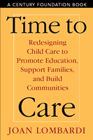

<body bgcolor="#FFFFFF" text="#000000" link="#0000FF" vlink="#CC0000" alink="#CC0000"><center><hr width="350" size="1" align="center" noshade>A blue print for improving child care in America<hr width="350" size="1" align="center" noshade><p><a href="https://cdcshoppingcart.uchicago.edu/Cart/ChicagoBook.aspx?ISBN=9781592130085&&PRESS=temple" target="_top">Buy this book!</a> | <a href="https://cdcshoppingcart.uchicago.edu/Cart/Cart.aspx?PRESS=temple" target="_top">View Cart</a> | <a href="https://cdcshoppingcart.uchicago.edu/Cart/Cart.aspx?PRESS=temple" target="_top">Check Out</a></p><p></p></center><!--none//--><h1>Time to Care</h1>
<H2>Redesigning Child Care to Promote Education, Support Families, and Build Communities</H2>
<H2>A Century Foundation Book</H2>
<h3>Joan Lombardi</h3>
<P>cloth 1-59213-008-9 $55.50, Nov 02, <FONT COLOR=#990033>Out of Stock Unavailable</FONT>
<br>paper 1-59213-009-7 $26.95, Mar 03, <FONT COLOR=#990033>Available</FONT>
<br>Electronic Book 1-59213-774-1 $26.95 <FONT COLOR=#990033>Out of Stock Unavailable</FONT>
<BR> 248 pp
6x9
</P><BLOCKQUOTE><I>"</I>Time to Care<I> is the ideal 'go-to' book in child care. It has everything&#151an historical perspective, a review of demographics and research, an insightful policy perspective, promising practice, and an exciting and viable vision for the future. I very highly recommend this book."</I>
<br>&#151<b>Ellen Galinsky</b>, President, Families and Work Institute, and author of <I>Ask the Children: The Breakthrough Study that Reveals How to Succeed at Work and Parenting</I><I></I></BLOCKQUOTE>
<p>In this important work, Joan Lombardi, one of Americas foremost experts on child care, shows how our current system is not meeting the needs of America's families and describes a vision for redesigning this system to promote healthy child and youth development. Both as an expert and as a parent, the author guides the reader through the problems that face the current child care system and outlines the possible solutions. Drawing on the most recent innovations from across the country, she offers fresh ideas for improving the quality and availability of child care, both for young children and those in after school programs.
<p>From renewal of welfare reform to the administration's efforts to promote literacy, debate at both the state and federal levels about child care will continue for the foreseeable future. Joan Lombardi shows how to bridge the gap between early education and child care by taking advantage of the hours that children spend in care to encourage child and youth development and by creating a system of program and community supports to improve quality.
<BR>&nbsp;<h2>Excerpt</h2><P>Excerpt available at <a href="http://www.temple.edu/tempress">www.temple.edu/tempress</a></p>
<BR>&nbsp;<h2>Reviews</h2>
<p><I>"</I>Time to Care<I> is full of creative and practical ideas about how to invest in and reform America's child care system to make it work better for everybody. Through these ideas, Lombardi powerfully reframes the child care debate as an opportunity for communities and society, not just a crisis confronting overwhelmed families. This wonderfully clear and engaging book will motivate and educate parents, citizen advocates and policymakers alike to get busy securing America's future."</I>
<br>&#151<b>J. Lawrence Aber</b>, Ph.D., Director, National Center for Children in Poverty, Columbia University
<p><I>"</I>Time to Care<I> provides a strong vision of how quality child care can contribute to the education of children and the support of their families."</I>
<br>&#151<b>Helen Blank</b>, Director, Child Care and Development, Children's Defense Fund
<p><I>"</I>Time to Care<I> is a compelling refutation of the widely held belief that the child care crisis in America is unresolvable&#151or that it can be resolved by simply relying on market forces. In this fluently written, thoroughly documented, and convincingly argued book, Joan Lombardi also provides a clear agenda for action to break the link, for children born into disadvantage, between poor beginnings and poor endings."</I>
<br>&#151<b>Lisbeth B. Schorr</b>, Director, Project on Effective Interventions at Harvard University, and author of <I>Common Purpose: Strengthening Families and Neighborhoods to Rebuild America</I>
<p><i>"...hopefully, providers and policy makers will read Lombardi's thoughtful book and will begin to take on these new challenges to improve child care for all children and families."</i>
<br>&#151<b>Juliet Bromer</b>, <i>Social Service Review</i>
<p><i>"Drawing upon decades of experience in childcare advocacy, Lombardi presents both a comprehensive history of childcare and several compelling proposals for improvement in current day care and school-related programs. Well researched and thorough.... Though more of a textbook read than leisurely summer fare, this book is worth a look for the many of us who feel frustrated with the constant struggle to find decent care for our children."</i>
<br>&#151<b><i>Brain, Child</i></b>
<p><i>"Citing statistics and vignettes about care giving situations in the United states, Lombardi makes clear that transforming the vision of high-quality, affordable child care for all children will be a difficult job.... Each recommendation is accompanied by recommended strategies that will be well-supported by early childhood professionals. The detailed notes and exhaustive documentation at the end of the book attest to Lombardi's tenacious stand against those opposed to a national child care agenda."</i>
<br>&#151<b>Judy Williston</b>, <i><a href="http://www.findarticles.com/p/articles/mi_qa3614/is_200301/ai_n9189642" target="new">Childhood Education</a></i>
<p><i>"Lombardi provides a road map for mentally reframing and physically restructuring child care in this country. Appropriate for educators and child-care professionals; recommended for all libraries."</i>
<br>&#151<b><i>Library Journal</i></b>
<p><i>"...this is a welcome, well-documented and hence convincing reminder of the importance of children to society and the latter's role in (and benefits from) good care and quality education."</i>
<br>&#151<b><i>Journal of Comparative Family Studies</i></b>
<BR>&nbsp;<h2>Contents</h2><P>
<p>Foreword
<br>Preface
<br>1. Reframing Child Care
<br>2. Looking Back: Child Care in the United States in the Twentieth Century
<br>3. A Good Beginning: Redesigning Child Care as Early Education and Family Support
<br>4. The New Neighborhood: Redefining Education After School
<br>5. The Caring Community: Rekindling a Commitment to Our Children
<br>6. Toward Redesigned Child Care: A Call for Investment and Reform
<br>Notes
<br>Index
</P><BR>&nbsp;<H2>About the Author(s)</H2>
<table><tr><td valign="top"><img src="/tempress/authors/1676_au.gif" height="90" width="75"></td><td width="100%" valign="middle"><p><b>Joan Lombardi</b> served as the first Associate Commissioner for Child Care in the U.S. Department of Health and Human Services where she was responsible for the direction and leadership for the nation's child care assistance program. Prior to that, she served as the staff director for the Secretary's Advisory Committee on Head Start Quality and Expansion. She currently serves as an advisor to a number of national foundations and organizations including ZEROTOTHREE and the Center for Law and Social Policy in Washington D.C.</P></td></tr></table>
<BR><H2>Subject Categories</H2>
<p><A HREF="/tempress/education.html" TARGET="_top">Education</a>
<BR><A HREF="/tempress/political.html" TARGET="_top">Political Science and Public Policy</a>
<BR><A HREF="/tempress/sociology.html" TARGET="_top">Sociology</a>
</p>
<p align="center"><a href="https://cdcshoppingcart.uchicago.edu/Cart/ChicagoBook.aspx?ISBN=9781592130085&&PRESS=temple" target="_top">Buy this book!</a> | <a href="https://cdcshoppingcart.uchicago.edu/Cart/Cart.aspx?PRESS=temple" target="_top">View Cart</a> | <a href="https://cdcshoppingcart.uchicago.edu/Cart/Cart.aspx?PRESS=temple" target="_top">Check Out</a></p><p><font face="Arial" size="1"><a href="copyright.html" onMouseOver="window.status='Web Copyright Policy';return true;" onMouseOut="window.status=''" title="Web Copyright Policy">&copy;</a> 2015 <a href="http://www.temple.edu" target="new" onMouseOver="window.status='Link to Temple University home page';return true;" onMouseOut="window.status=''" title="Link to Temple University home page">Temple University</a>. All Rights Reserved. http://www.temple.edu/tempress/titles/1676_reg.html</font></p>